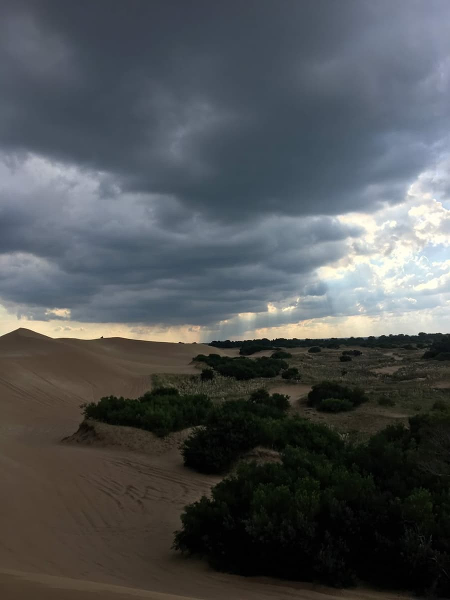
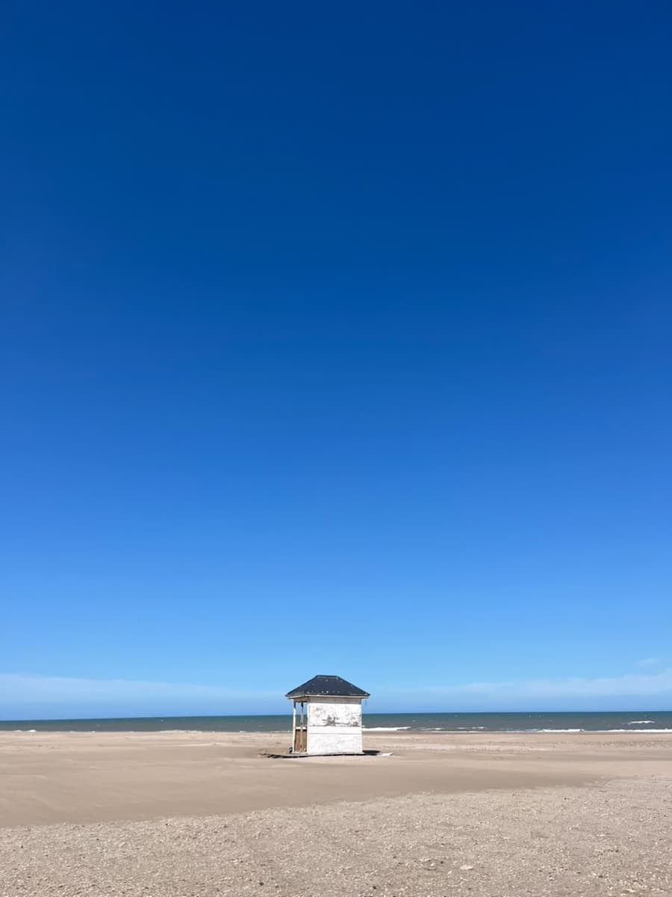
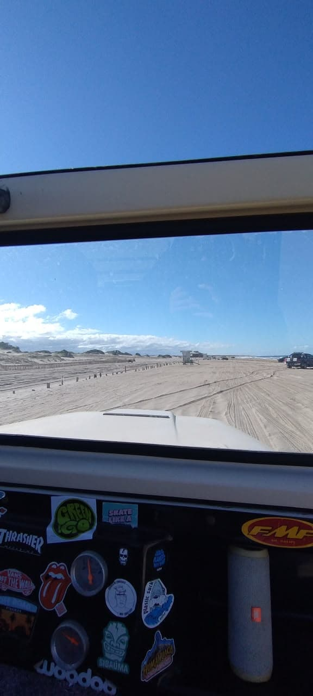

Un recorrido de un día por Pinamar, en la Costa Atlántica
La idea es simple: pasar un día entero en Pinamar y aprovecharlo de punta a punta. Arrancás
temprano en el mar, al mediodía te vas a los médanos, a la tarde caminás por el bosque y a la
noche terminás en la Av. Bunge.
Armamos el recorrido pensando en la gente que va por primera vez y no sabe bien qué hacer.
Cada parada tiene su página con lo que hay que saber antes de ir.
Es un recorrido por Pinamar ordenado según el momento del día: mañana, mediodía, atardecer y noche.
No es una lista de lugares para ver, es un plan para seguir en orden. Igual no hace falta hacerlo
entero, cada uno puede elegir las paradas que más le gusten.
Está pensado para familias con chicos y para grupos de amigos de entre 16 y 30 años. Por eso en cada
parada hay dos opciones: una "En familia" y otra "Con amigos". El
lugar es el mismo, lo que cambia es qué hacer ahí.
Nuestro objetivo es que el que llega a Pinamar tenga toda la información junta: dónde queda cada
lugar, cuánto tiempo lleva, cuánto cuesta y qué conviene llevar.
Un poco de historia

Donde hoy está Pinamar antes había solo médanos. A fines de los años 30 el arquitecto Jorge Bunge
pensó en hacer una ciudad balnearia que juntara el mar con el verde, y en 1941 empezaron a fijar
los médanos y a plantar árboles. Nunca se había hecho algo así en Argentina.
La ciudad se inauguró el 14 de febrero de 1943. Desde ese año se plantaron más de seis millones de
árboles, y de ahí viene el nombre: pino + mar.
Hoy el partido de Pinamar tiene cuatro localidades: Pinamar, Ostende, Valeria del Mar y Cariló.
Está a unos 340 km de la Ciudad de Buenos Aires.
Los médanos que se fijaron en esa época son los mismos que hoy se ven en La Frontera, al norte. Ahí todavía se puede ver cómo era el paisaje antes de que existiera la ciudad.
Las 4 paradas
El recorrido sigue el orden del día. Cada parada tiene su página con más información, fotos, un mapa y lo que hay que llevar. Si solo te interesa una, podés ir directo a esa.

Parada 1 - Mañana
El mar
A la mañana la playa está más tranquila y el agua más calma, así que es el mejor momento para
tomar una clase de surf. No hace falta saber nada, hay clases para todas las edades. Si no te
querés meter al agua, podés caminar por la costa hasta el muelle.
Primero a comer a algún parador de la playa y después a La Frontera, al norte de la ciudad, donde
hay médanos de hasta 40 metros. Es la parte del día con más adrenalina: se puede hacer sandboard o
subir caminando para ver todo desde arriba.
Para bajar un cambio después de los médanos. El sendero del Camino Parque de los Pioneros va entre
los pinos y se puede hacer caminando, en bici o corriendo. Es gratis y es accesible.
Un consejo: no quieras hacer todo. Si el día está lindo, quedate más tiempo en la playa o en los médanos y acortá el bosque. Si está nublado, el bosque y la avenida se disfrutan igual. La idea es pasarla bien, no cumplir con una lista.
Cómo organizar el día
Esta es la forma en que lo haríamos nosotros. Los horarios son aproximados.
Horario
Parada
Lugar
Cuánto dura
Costo
9 a 12 h
Mañana
Playa y paseo costero
2 a 3 h
Playa gratis, clases pagas
12 a 16 h
Mediodía
Paradores y La Frontera
2 a 3 h
Caminar gratis, sandboard pago
17 a 20 h
Atardecer
Camino Parque de los Pioneros
1 a 2 h
Gratis
Desde las 21 h
Noche
Av. Bunge
De 2 h a toda la noche
Depende de lo que hagas
Si vas con chicos, lo más probable es que la noche termine temprano, después del helado. No pasa nada, el recorrido se adapta.
Mapa del recorrido
Los números son el orden de las paradas y las ubicaciones son aproximadas. Si tocás un marcador te dice qué lugar es.
Todas las paradas menos La Frontera quedan cerca del centro y se pueden hacer caminando.
Para moverse entre paradas, lo más cómodo es tener auto, sobre todo para ir y volver de La Frontera. El resto se puede hacer caminando o en bici, que en Pinamar es muy común.
Antes de viajar

Cómo llegar
En auto se va por la Ruta 2 y después por la Ruta 11 o la 74. Son más o menos 4 horas desde
Buenos Aires. También hay micros que salen desde Retiro.
Ya en Pinamar, el centro, la playa y la avenida se hacen caminando. Para La Frontera (está a
casi 8 km del centro) conviene ir en auto.
Cuándo ir
Lo mejor es en verano, de diciembre a marzo, que es cuando hay clases de surf, excursiones y
más movimiento de noche. El bosque y la avenida se pueden visitar todo el año.
Armamos algunos paquetes con las actividades pagas del recorrido. Elegí uno, cuántos van y si querés
sumar algo. El total se calcula solo. Si tenés dudas, mirá cómo reservar.
Mañana de surf
$32.000 por persona
Clase de una hora y media con tabla y traje incluidos.
Sandboard
$28.000 por persona
Alquiler de la tabla y un guía en los médanos de La Frontera.
Cabalgata en el bosque
$38.000 por persona
Cabalgata guiada al atardecer. No hace falta saber andar a caballo.
Cena en Av. Bunge
$30.000 por persona
Entrada, plato principal y postre en un restaurante de la avenida.
Día completo
$110.000 por persona
Las cuatro actividades juntas. Sale $18.000 menos que pagarlas por separado.
Total
Precio por persona: $0
Subtotal: $0
Adicionales: $0
Total: $0
Precios en pesos argentinos. Es una simulación, no se cobra nada.
Paso 2 de 2: revisá y confirmá
Fijate que esté todo bien. Si querés corregir algo, tocá "Cambiar datos".
¿Necesitás ayuda?
Si es la primera vez que reservás, acá te explicamos cómo hacerlo paso a paso.
Cómo reservar
Elegí un paquete. El precio por persona aparece al lado del nombre.
Poné cuántos van y qué día. El total se va calculando solo a la derecha.
Si querés, sumá el traslado o la sesión de fotos.
Completá tu nombre y tu mail y tocá "Ver resumen".
Revisá que esté todo bien y tocá "Confirmar". Si algo está mal, tocá "Cambiar datos".
Si algo sale mal
Si te falta un dato o hay uno mal, el campo se pone rojo y abajo te dice cómo arreglarlo.
Mirá las preguntas frecuentes de acá abajo. Si no está tu respuesta, mandanos un mensaje desde
Contacto y te respondemos en uno o dos días hábiles.
Preguntas frecuentes
No, hay clases para principiantes de todas las edades y el equipo está incluido.
No, es una sugerencia. Podés hacer solo las que te interesen o repartirlas en varios días.
Sí, todas las paradas tienen una opción para ir en familia.
Por ahora no. Desde febrero de 2026 los vehículos están prohibidos por una medida judicial. Antes de
ir conviene preguntar en la Secretaría de Turismo si ya los habilitaron.
La playa, el paseo costero, caminar por los médanos, el bosque y pasear por la avenida.
La playa y los médanos dependen mucho del clima. Si el día está feo, conviene cambiar el orden o consultar con la escuela o el guía.
En taxi o remís. A la madrugada tardan bastante, así que mejor pedirlo con tiempo.
No, es una simulación que hicimos para el trabajo de la facultad.